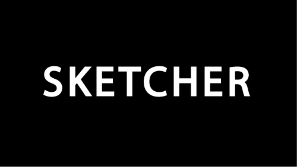
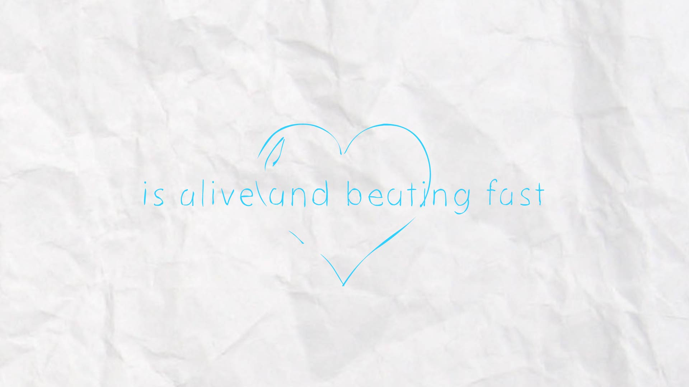
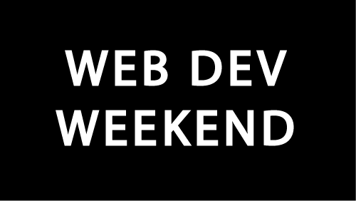
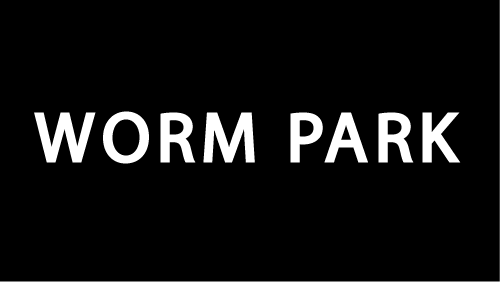
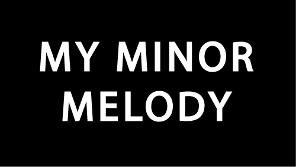

Projects.
Below is a list of projects, ranging from independent work and research to classwork. Clicking the video cards will load the selected work for viewing and offer additional information about production details. You can switch between tabs to view animations, research, graphics applications, and websites I've build and created. Happy viewing!
Data-Driven City Generator
Spring 2020
Deep Generative Environments
Spring 2018

AR Typography
Spring 2018

AE Plug-In Development
Fall 2018

Motion Capture Parser
Spring 2018
OpenMP Rasterization
Spring 2020
3A2A: 3D-Assisted 2D-Animation
Computer Graphics
2D hand-drawing animation can be a very time-consuming process, requiring years of posing and drawing experience. In an effort to help revive 2D hand-drawn animation, we researched a 2D interface that allows users to draw and edit a stick figure in 3D space, and using that information, poses a 3D character model that can then be rasterized and contour-detected to get keyframe reference images. These reference images can then be brought into any external drawing program, where users without drawing experience can use these character keyframes as guides to create their own animations. We demonstrate how this strategy helps non-artists create 2D hand-drawn animations by only requiring them to animate a sequence of stick figures in order to produce character body animations that they can they sketch over to create the feeling of 2D hand-drawn animation. We believe that if anyone can draw stick figures, then anyone can animate.
Frequency-Based Texture Caching
Computer Graphics
Computer Architechture
During rasterization we know all the textures referenced by each primitive, and thus the total number of accesses per texture over the scene's rasterization lifetime. This data can be used to help predict how likely the same texture will be accessed in the near future, which is essential in determining whether to keep certain texture data in the cache. We propose a new cache eviction policy that combines a baseline LRU ranking with texture access frequency to compute an eviction score that evicts textures from the cache that have not been recently used and have a low probability of being accessed in the future. We evaluate our results for multiple cache configurations across different scenes with varying primitive and texture quantities and find that our algorithm does increasingly better than pure LRU for higher cache associativities.
Japanese-Style Toon-Based Water Shader
Computer Graphics
This paper looks at a Non-Photo-Realistic (NPR) representation of water inspired by the famous Japanese water-art painting The Great Wave off Kanagawa by Katsushika Hokusai and attempts to produce a modular toon-based water shader based on the work. Such a system requires vertex position updates based on interpolated spline calculations on the CPU, laplacian height diffusion in the vertex shader, as well as thresholding on position, curvature, and heightmap information in the fragment shader.
An Analysis of Deferred Tile-Shading
Computer Graphics
Computer Architechture
This project focused on implementing deffered shading into a tile-based rasterization pipeline coded on the CPU using intel intrinsics. Our results show that there is an evident trade-off in the speedup of deferring rasterizatin and the penalty of memory accessing in the G-buffer that lead to results that only mearly improve temporal performance in more compelx scenes.
3D Global Registration Using ICP & Branch-and-Bound Search
Computer Graphics
Computer Vision
Point cloud registration is a staple for many different applications in robotics and graphics communities. Iterative Closest Point (ICP), which is the standard method for this task suffers from local minimas and hence is only useful given a good initial alignment. We focus on the task of global registration of 2 point clouds, without the use of a priori information with regards to alignment, using a Branch and Bound (BnB) search over the euclidean transformation space with ICP sub-routines. We explore the idea that a BnB method can help in overcoming the local minimas that ICP would succumb to by comparing multiple methods using this framework.
Stabilizing Object Lighting Under Variable Lighting Conditions In Video
Computer Graphics
Computer Vision
We present a novel light-stabilization algorithm that takes into account object BRDFs to relight sequences of frames subjected to variable lighting conditions. By assuming no objects in scene share the same BRDF, we calculate illumination changes in objects independently and apply a calculated relighting mask to a sequence of video frames to stabilize changes in illumination. OpenCV is used to calculate object bounding boxes to perform local lighting re-weighting. Pixels outside local objects are considered a part of the global lighting scale and are relight using k-means clustering to separate hues in HSL space and perform relighting independently on separate clusters. Global relighting does not respect BRDF properties and assumes all objects in the same hue group share a uniform BRDF. We test our algorithm on manually-relit and real-life variable lighting scenes and discover that our algorithm is translation and scale-invariant but not rotation-invariant.
Vector-Based Animation
Fall 2018

Hand-Drawn Animation
Spring 2018

Kinetic Typography
Spring 2018

Kinetic Typography
Spring 2018

Video Edit
Spring 2018

Hand-Drawn Animation
Fall 2017

Kinetic Typography
Fall 2017
Kinetic Typography
Fall 2017
Kinetic Typography
Fall 2017

Kinetic Typography
Fall 2017
Motion Graphics
Fall 2016
Web Application
Fall 2019

Web Development
Spring 2018

Interactive Graphics
Spring 2018

Audio Builder Game
Fall 2017